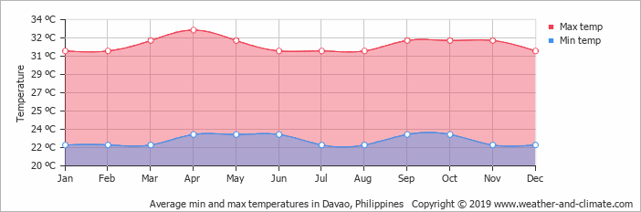

Exploring the top destinations in Davao is possible if your schedule permits it, but it requires a well-prepared itinerary to make it possible. We recommend at least 3-5 days to pull this off. You can also choose to visit just one or two destinations in Davao. Here’s a sample itinerary for Davao that you can take inspiration from:
The best time to visit Davao is during the fruit season from August to October. Durian, Mangosteen, Marang, Rambutan and other tropical fruits are abundant during these months and cost really cheap. Also, Kadayawan, Davao's festival is also celebrated during the third week of August.
You can expect a warm tropical climate almost all year round in Palawan, except in the rainy season, usually around July to September. The month with the most rainfall is during September. The warmest months are from March to April, with temperatures reaching 33°C. The month with the lowest degrees are from November to February with an average temperature of 23°C but is still dry.
The province of Palawan and its top destinations are accessible via land, sea, and air travel. Puerto Princesa is often the gateway to the province of Palawan since more flights are going here than to other airports. Your choice of entry point will affect your budget and itinerary, so it's best to look into which place best fits your preferences.

Davao has its own airport, the Francisco Bangoy International Airport commonly referred to as the Davao International Airport. It is the main gateway to Mindanao, so it is naturally the busiest airport in Mindanao and the third busiest in the Philippines.
Aside from being connected to major jump-offs all over the Philippines, Davao Airport is also connected to a number of international airports.
If you’re coming from outside of the Philippines, you can travel to Davao directly, or you can fly to either Manila-Ninoy Aquino International Airport in Luzon or Mactan-Cebu International Airport in the Visaya.

Traveling to Davao via ferry is also possible, albeit less convenient. There are no ports that accommodate long-distance passenger ferries within the city. If you’re coming from Manila or Cebu, you will be docking at Nasipit Port in Agusan del Norte which is approximately 6 hours away from Davao City.
2Go Travel offers ferry routes from Manila to Nasipit Port twice a week. The travel time typically takes 33 hours and 30 minutes. Likewise, only 2Go Travel has routes from Cebu to Nasipit Port.
There are trips thrice a week with travel time lasting 8 hours. The sailing durations and trip frequency may vary from season to season, so be sure to check the schedule before you plan your trip.